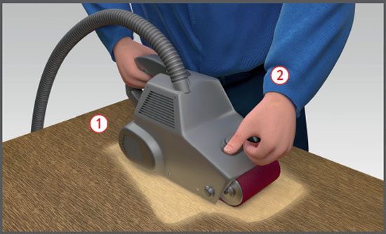

Das Einatmen freigesetzter gesundheitsschädlicher Stäube kann zu einer Erkrankung der Atemwege führen.
Durch ungeschützte bewegte Maschinen teile kann es zu Verletzungen der Haut kommen.
Beim Arbeitsgang entstehen Hand-Arm-Vibrationen.

Schutzmaßnahmen
Nur mit Absaugvorrichtung arbeiten .
Staubsammelbehälter rechtzeitig entsorgen und dabei Staubbildung vermeiden. Bei Eichen- und Buchenholzstäuben sowie Stäuben gefährlicher Beschichtungsstoffe Atemschutz mit Partikelfilter FFP2 benutzen.
Netzstecker nur bei ausgeschalteter Maschine in die Steck dose hineinstecken.
Gerät anschalten, bevor das Werkstück berührt wird.
Maschine stets mit beiden Händen führen .
Erst ausschalten, wenn die Maschine das Werkstück nicht mehr berührt.
Stecker aus der Steckdose ziehen, bevor Wartungs- oder Reinigungsarbeiten an der Maschine vorgenommen werden.
Unterweisung anhand der Betriebsanweisung.
Zusätzliche Hinweise
Handbandschleifmaschinen
Darauf achten, dass Schleifbandlaufrichtung und Maschinenlauf übereinstimmen. Pfeile auf Schleifbandinnenseite mit denen der Maschinen vergleichen. Schleifband mittig justieren.
Bei stationärer Benutzung Maschine fest einspannen.
Nur gegen Verschieben gesicherte Werkstücke bearbeiten.
Schleifarbeiten in Räumen mit explosionsfähiger Atmosphäre
Nur druckluftbetriebene oder ex-geschützte Schleifmaschinen einsetzen, die beim Bearbeitungsvorgang keine Funken reißen. Explosionsfähige Atmosphäre ist nicht zu erwarten, wenn der Arbeitsplatzgrenzwert dauerhaft unterschritten wird.
Arbeitsmedizinische Vorsorge
Arbeitsmedizinische Vorsorge nach Ergebnis der Gefährdungsbeurteilung veranlassen (Pflichtvorsorge) oder anbieten (Angebotsvorsorge). Hierzu Beratung durch den Betriebsarzt.